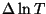
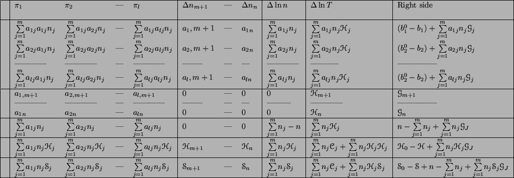

In order to solve simultaneously the different equations, cpropep fill a matrix with the appropriate coefficient and solve the system using the method of LU factorisation or gauss elimination. Here is a resume on the form of a matrix of the equations.
It is important to note that depending on the type of problem, some row are not used. For fixed temperature/pressure, the column with  and the two last row are not used.
For the two other type of problem, fixed enthalpy or fixed entropy, the column is used with one of the two last row.
